Dành cho nhân viên văn phòng: Kinh doanh · Điều hành xe · Kế toán · Quản trị
Phần mềm văn phòng: https://dieuxe.vietnamexplore.vn
Cổng nhà xe đối tác: https://nhaxe.vietnamexplore.vn
App lái xe (Android): đăng nhập với máy chủ https://dieuxe.vietnamexplore.vn
CÔNG TY TNHH DU LỊCH VIETNAM EXPLORE
09 Bình Thái 2, phường Cẩm Lệ, thành phố Đà Nẵng
Phiên bản tháng 10/2026 · Tài liệu nội bộ
Mục lục
Tổng quan và phân quyền
Đăng nhập và giao diện chung
Trang Tổng quan
Booking: tạo đơn, báo giá, xác nhận
Giấy tờ của booking
Booking tự động từ website
Điều xe
Xe ghép
Hiện trường: sự cố, kiểm tra trước chuyến
Thu tiền khách và công nợ khách hàng
Công nợ nhà xe
Sổ thu chi và tiền nhờ lái xe thu
Tạm ứng lái xe
Phí đường ePass
Báo cáo và bảng lương lái xe
Bảng giá
Danh mục
Hệ thống (Admin)
App lái xe
Quy định chung và câu hỏi thường gặp
1. Tổng quan và phân quyền
Phần mềm quản lý toàn bộ quy trình vận tải của công ty: nhận đơn → báo giá → xác nhận → điều xe → lái xe / nhà xe chạy chuyến → thu tiền, trả nhà xe → báo cáo, tính lương.
Booking→Điều xe→App lái xe / Cổng nhà xe→Tài chính→Báo cáo
Mỗi người dùng có một hoặc nhiều vai trò. Menu chỉ hiện những mục người dùng có quyền.
Chức năng
Admin
Điều hành xe
Kinh doanh
Kế toán
Tạo / sửa booking, báo giá
✅
✅
✅
👁
Điều xe, xe ghép, cập nhật trạng thái chuyến
✅
✅
👁
👁
Danh mục xe, lái xe, nhà xe
✅
✅
👁
👁
Bảng giá bán, phụ thu, ngày lễ
✅
👁
👁
✅
Thu tiền khách
✅
✅
✅
Công nợ nhà xe, sổ thu chi, phí ePass
✅
✅
✅
Tạm ứng lái xe, lương lái xe
✅
✅
Báo cáo
✅
👁
👁 khách của mình
✅
Người dùng, thông tin công ty, sao lưu, nhật ký
✅
Ảnh minh họa chụp từ phần mềm với dữ liệu mẫu (tên khách, lái xe, nhà xe, số điện thoại là giả).
✅ được thao tác · 👁 chỉ xem. Lái xe dùng app lái xe; nhà xe đối tác dùng cổng nhà xe (có tài liệu hướng dẫn riêng).
2. Đăng nhập và giao diện chung
2.1. Đăng nhập
Mở https://dieuxe.vietnamexplore.vn bằng Chrome / Edge / Safari (máy tính hoặc điện thoại).
Nhập tên đăng nhập và mật khẩu do Admin cấp → Đăng nhập.
Đổi mật khẩu ngay lần đầu: bấm vào tên mình ở góc trên bên phải → Đổi mật khẩu.
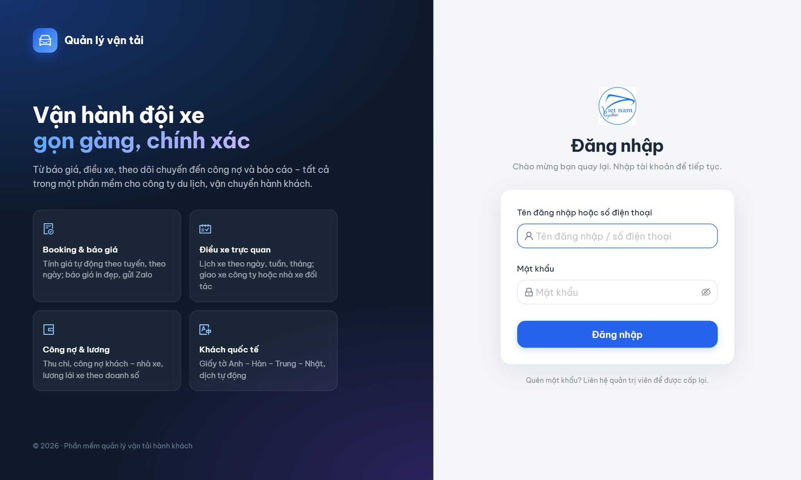
Hình: Màn hình đăng nhập
2.2. Bố cục màn hình
Menu bên trái (trên điện thoại: nút ☰): Tổng quan, Booking, Điều xe, Xe ghép, Hiện trường, Báo cáo; nhóm Tài chính, Bảng giá, Danh mục, Hệ thống.
Nút + Tạo nhanh trên thanh đầu trang: Booking mới, Lệnh điều xe, Phiếu thu chi (tùy quyền).
🔔 Thông báo: booking website mới, nhà xe nhận / từ chối chuyến, phát sinh chờ duyệt, lái xe không đạt kiểm tra trước chuyến, sự cố hiện trường… Bấm thông báo để mở thẳng nội dung liên quan.
Các bảng có ô tìm kiếm, bộ lọc ngày / trạng thái, sắp xếp; nhiều trang có nút Xuất Excel.
Bảo mật: không dùng chung tài khoản; không cho người ngoài xem thông tin khách (hộ chiếu, SĐT, danh sách đoàn). Dùng máy chung thì Đăng xuất sau khi làm xong.
3. Trang Tổng quan
Việc cần làm: báo giá chờ khách xác nhận, chuyến chờ điều xe, chuyến 7 ngày tới.
Chỉ số kinh doanh theo kỳ chọn: doanh thu, chi phí, lợi nhuận, biên lợi nhuận (so với kỳ trước); biểu đồ theo ngày / tháng, theo dịch vụ, loại xe, nhân viên kinh doanh, khách hàng lớn.
Tiền: booking nháp, khách còn nợ, phải trả nhà xe.
Giấy tờ hết hạn hoặc sắp hết hạn (30 ngày tới): đăng kiểm, bảo hiểm, phù hiệu xe; bằng lái, khám sức khỏe lái xe – cần gia hạn kịp thời.
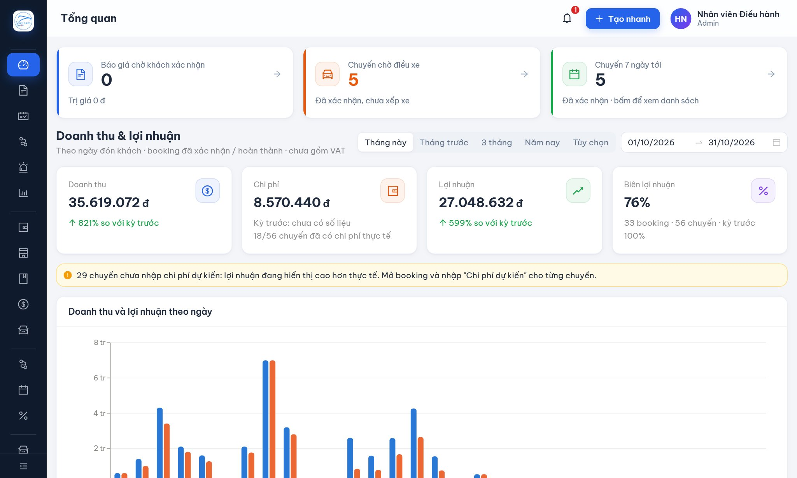
Hình: Trang Tổng quan: việc cần làm và chỉ số doanh thu, lợi nhuận
Cảnh báo "chuyến chưa nhập chi phí dự kiến" nghĩa là lợi nhuận đang hiển thị cao hơn thực tế – nhập chi phí cho các chuyến đó.
4. Booking: tạo đơn, báo giá, xác nhận
Một booking là một đơn của khách, gồm một hoặc nhiều chuyến (ví dụ đoàn 3 ngày: đón sân bay, city tour, tiễn sân bay). Mỗi chuyến là một xe; đoàn cần 2 xe thì tạo 2 chuyến (dùng nút Nhân bản).
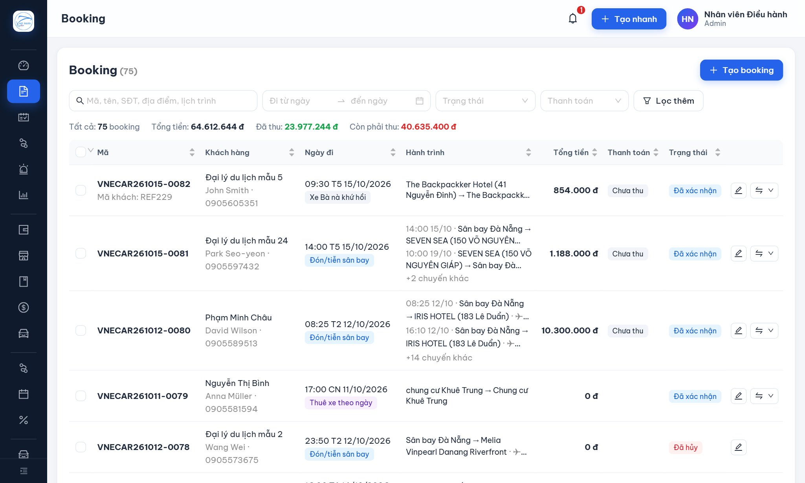
Hình: Danh sách Booking: tìm kiếm, lọc, tổng tiền / đã thu / còn phải thu
4.1. Trạng thái booking
Nháp→Đã báo giá→Đã xác nhận→Hoàn thành· bất kỳ lúc nào →Đã hủy(ghi lý do)
Đã xác nhận: các chuyến chuyển sang Điều hành xếp xe.
Khi mọi chuyến hoàn thành, booking tự chuyển Hoàn thành.
Booking đã hoàn thành chỉ sửa khi thật cần (nút Sửa booking): thay đổi giá / chuyến sẽ cập nhật lại doanh thu, công nợ, lương lái xe.
4.2. Tạo booking mới
Booking → Booking mới (hoặc Tạo nhanh → Booking mới).
Khách hàng / đại lý (chọn từ danh mục hoặc để trống với khách lẻ), Người liên hệ, SĐT liên hệ, Nguồn khách, NV kinh doanh, Mã booking của khách (nếu đại lý có mã riêng), Ngôn ngữ giấy tờ (báo giá, bảng đón, hợp đồng song ngữ).
Bấm Thêm chuyến, nhập từng chuyến (mục 4.3).
Nhập Giảm giá, Đặt cọc (số tiền yêu cầu cọc in trên báo giá), Hóa đơn nếu khách lấy hóa đơn (tên đơn vị, mã số thuế, địa chỉ, email nhận hóa đơn, thuế suất).
Ghi chú: Ghi chú cho khách (in trên báo giá) và Ghi chú nội bộ (khách không thấy).
Bấm Lưu. Mã booking tự sinh.
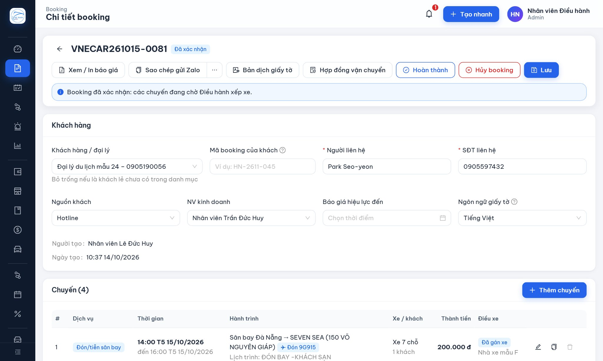
Hình: Chi tiết booking: nút báo giá, sao chép gửi Zalo, hợp đồng, hoàn thành / hủy; phần Khách hàng
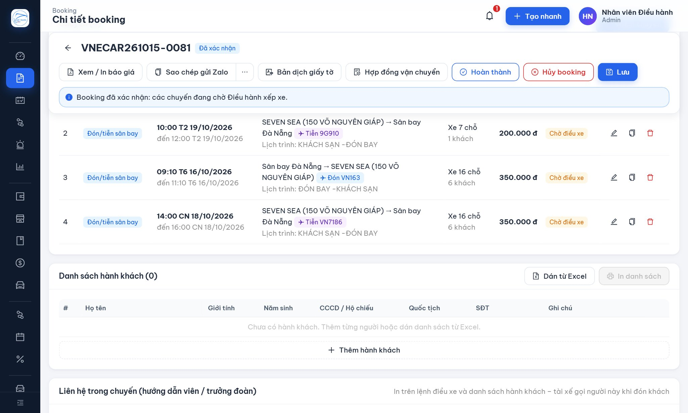
Hình: Danh sách chuyến trong booking, trạng thái điều xe từng chuyến
4.3. Thông tin một chuyến
Trường
Ghi chú
Dịch vụ, kiểu thuê
Đón / tiễn sân bay, theo tuyến, city tour, thuê theo ngày, tour nhiều ngày, xe ghép… (danh mục Dịch vụ).
Giờ đón, kết thúc dự kiến, số ngày
Kết thúc dự kiến dùng để kiểm tra trùng lịch xe / lái xe.
Điểm đón, điểm trả
Chọn nhanh từ danh mục Địa điểm hoặc gõ địa chỉ cụ thể.
Lịch trình di chuyển
Các điểm ghé trong ngày (city tour, thuê ngày).
Số khách, loại xe
Hệ thống chặn xe không đủ chỗ khi điều xe.
Chuyến bay đón / tiễn
Số hiệu chuyến bay – lái xe, nhà xe tra được giờ hạ / cất cánh.
Giá chuyến (chưa thuế)
Tự tính gợi ý theo bảng giá + phụ thu (ban đêm, lễ Tết…); nhân viên được sửa giá, thêm / bớt phụ thu, vượt giờ, vượt km.
Chi phí dự kiến
Chi phí ước tính khi chạy xe công ty – để thấy lợi nhuận dự kiến ngay khi báo giá.
Số tiền lái xe thu
Khi khách trả tiền mặt cho lái xe (nhờ thu) – xem mục 12.2.
Ghi chú chuyến
Hiện cho lái xe / nhà xe.
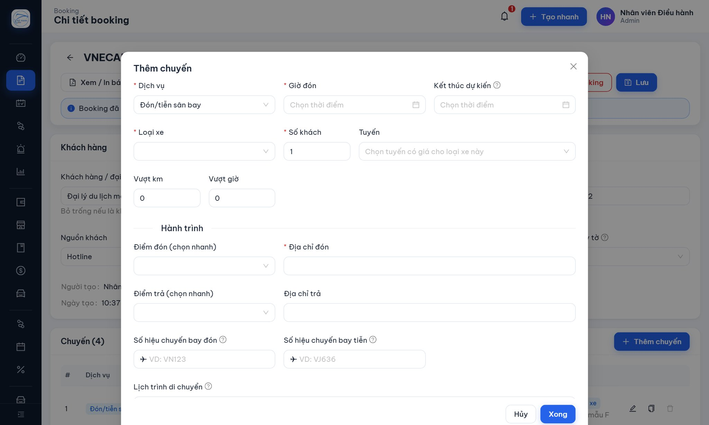
Hình: Hộp Thêm chuyến: dịch vụ, giờ đón, loại xe, số khách, hành trình, chuyến bay
4.4. Báo giá và xác nhận
Báo giá: trang báo giá có thông tin công ty, bảng chuyến, tổng tiền – In / lưu PDF gửi khách.
Sao chép gửi Zalo: tạo sẵn nội dung báo giá dạng chữ (chọn được ngôn ngữ) để dán vào Zalo / email.
Khách đồng ý → chuyển trạng thái Đã xác nhận. Khách không đi → Hủy booking (ghi lý do).
Màn hình booking luôn hiện Tổng tiền · Đã thu · Còn phải thu và Lợi nhuận dự kiến.
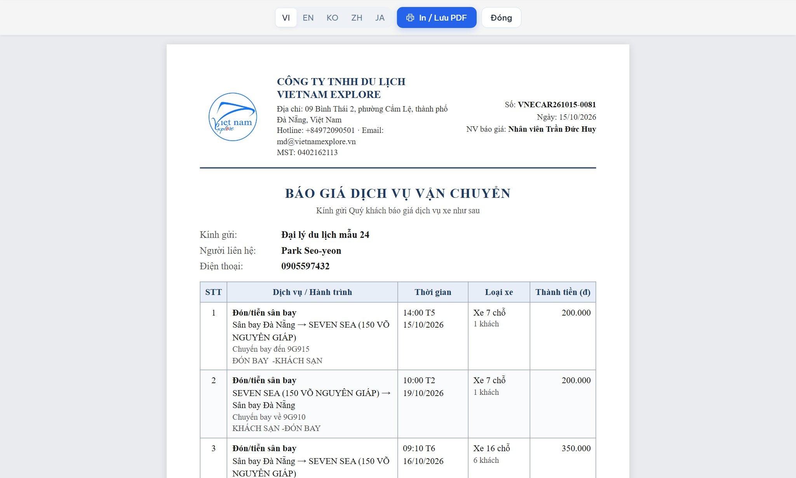
Hình: Trang báo giá: chọn ngôn ngữ (VI, EN, KO, ZH, JA), In / Lưu PDF
Mẹo: Danh sách Booking có bộ lọc theo ngày đi, trạng thái, khách, nguồn khách và sắp xếp (ngày đi gần nhất, còn phải thu nhiều nhất…). Bấm vào tên cột để sắp xếp nhanh.
5. Giấy tờ của booking
Giấy tờ
Cách dùng
Danh sách hành khách
Nhập họ tên, giới tính, quốc tịch, số giấy tờ từng khách (lái xe cũng bổ sung được trên app). In theo mẫu Phụ lục V.
Bảng đón
Tên đón khách (và dòng phụ); có thể tải lên file bảng đón khách gửi. Lái xe / nhà xe mở bảng đón toàn màn hình trên điện thoại hoặc in A4.
Hợp đồng vận chuyển
Bên thuê, ngày ký, cự ly, phương thức thanh toán, điều khoản. Số hợp đồng tự cấp; bản in có QR dẫn tới hợp đồng điện tử – khách xác nhận online, lái xe xuất trình khi kiểm tra. Hợp đồng lưu ít nhất 3 năm, không xóa cùng booking.
Lệnh vận chuyển
Mở ở Điều xe → chi tiết chuyến (hoặc chuyến xe ghép) → Lệnh vận chuyển, theo mẫu Phụ lục IV.
Lượt khách xe ghép không đưa vào hợp đồng thuê xe (xe hợp đồng không được bán vé / gom khách lẻ).
6. Booking tự động từ website
Đơn đặt dịch vụ vận chuyển trên website công ty tự về phần mềm khoảng 2 phút một lần (đơn tour, khách sạn, vé… không lấy).
Phần mềm tự tạo booking + chuyến, tự điền danh sách hành khách từ thông tin khách để lại, quốc tịch theo mã nước của số điện thoại; xe ghép thì gắn vào chuyến xe ghép, chưa có tuyến thì tự tạo tuyến và báo điều hành.
Đơn website Hoàn thành (đã thanh toán) → booking tự Đã xác nhận và ghi nhận đã thu đủ.
Đơn bị hủy / hoàn tiền trên website → phần mềm ghi chú vào booking và báo điều hành; nhân viên kiểm tra rồi hủy booking nếu cần (không tự hủy).
Booking website đã chạy xong hơn 24 giờ tự chuyển Hoàn thành.
Nhân viên vẫn cần kiểm tra lại booking website: giờ đón, điểm đón, số khách, chuyến bay, ghi chú của khách – rồi điều xe.
7. Điều xe
Điều xe dành cho Điều hành xe: xếp xe cho mọi chuyến của booking đã xác nhận.
7.1. Màn hình Điều xe
Chọn ngày. Bên trái: cột Chờ điều xe. Bên phải: lịch xe công ty theo giờ và các chuyến giao nhà xe.
Bấm vào chuyến để mở khung điều xe. Tạo nhanh → Lệnh điều xe để tạo chuyến lẻ trực tiếp.
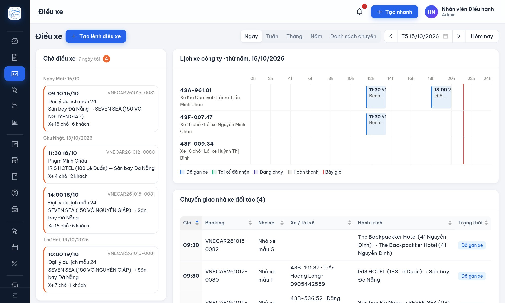
Hình: Màn hình Điều xe: cột Chờ điều xe, lịch xe công ty, chuyến giao nhà xe
7.2. Gán xe
Cách
Thao tác
Xe công ty
Chọn xe (hệ thống gợi ý xe đủ chỗ, nhãn Rảnh / Trùng lịch) → lái xe mặc định tự điền, đổi được → Gán xe công ty. Lái xe nhận thông báo trên app.
Xe đối tác
Chọn nhà xe (chỉ hiện nhà xe có loại xe phù hợp), nhập giá thuê (chưa thuế), yêu cầu xuất hóa đơn + thuế suất nếu cần, ghi chú điều xe → Giao nhà xe đối tác. Nhà xe nhận chuyến trên cổng nhà xe và tự nhập biển số, tài xế. Xem ngay lãi thực tế.
Kiểm tra tự động khi lưu: chặn xe không đủ chỗ; cảnh báo xe / lái xe trùng lịch, xe đang bảo dưỡng, hạng bằng lái không phù hợp, lái xe nghỉ, giấy tờ xe / bằng lái hết hạn trước ngày chạy.
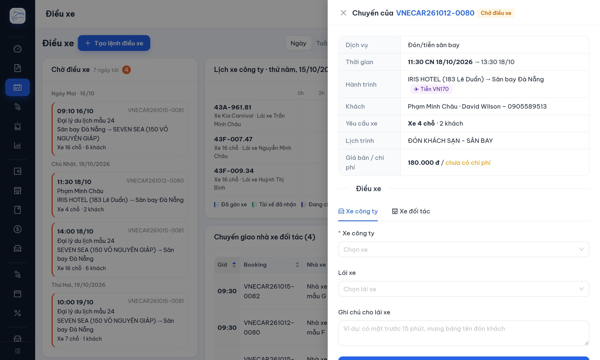
Hình: Khung điều xe: thông tin chuyến, tab Xe công ty / Xe đối tác
7.3. Trạng thái chuyến
Chờ điều xe→Đã gán xe→Tài xế đã nhận→Đang đến đón→Đã đón khách→Hoàn thành
Lái xe công ty / nhà xe tự cập nhật trên app / cổng nhà xe. Điều hành cập nhật thay được bằng nút Cập nhật: … trong khung điều xe.
Hủy điều xe → chuyến quay lại Chờ điều xe; lái xe / nhà xe cũ được báo.
Sao chép lệnh điều xe: nội dung chuyến (giờ, điểm đón / trả, khách, chuyến bay, ghi chú) để gửi Zalo.
7.4. Duyệt phát sinh và điều chỉnh giá nhà xe
Nhà xe khai báo phát sinh khi hoàn thành chuyến (thêm giờ, thêm điểm…) → thông báo Phát sinh nhà xe chờ duyệt.
Mở chuyến → Duyệt phát sinh: duyệt (có thể sửa số tiền được duyệt) hoặc không duyệt, ghi chú lý do. Chỉ phát sinh đã duyệt mới tính vào công nợ nhà xe.
Điều chỉnh giá nhà xe khi cần sửa giá thuê đã giao (ghi lý do – nhà xe thấy trên cổng).
8. Xe ghép
Bán từng chỗ trên các tuyến bus cố định; nhiều booking ghép vào một chuyến xe.
Danh mục → Tuyến xe ghép: tuyến, giá vé người lớn / trẻ em (giá đại lý), điểm dừng / khu vực đón (phụ phí), lịch chạy cố định theo ngày trong tuần.
Xe ghép: chọn ngày → các chuyến theo tuyến với thanh ghế đã bán / còn trống. Mở chuyến để:
Điều xe cả chuyến (xe công ty hoặc nhà xe + giá thuê cả chuyến) – mọi lượt khách tự nhận cùng xe; chi phí chia theo số khách.
Xem / Chép danh sách khách theo điểm đón, xuất Excel, Lệnh vận chuyển.
Đóng bán / Mở bán lại, Hủy chuyến, Bắt đầu chạy, Tạo chuyến thêm (tăng chuyến).
Bán vé: trong booking → Thêm chuyến, dịch vụ Xe ghép → chọn tuyến, ngày, giờ chạy (hiện ghế còn), điểm đón / trả, người lớn / trẻ em → giá tự tính. Không đặt vượt số ghế.
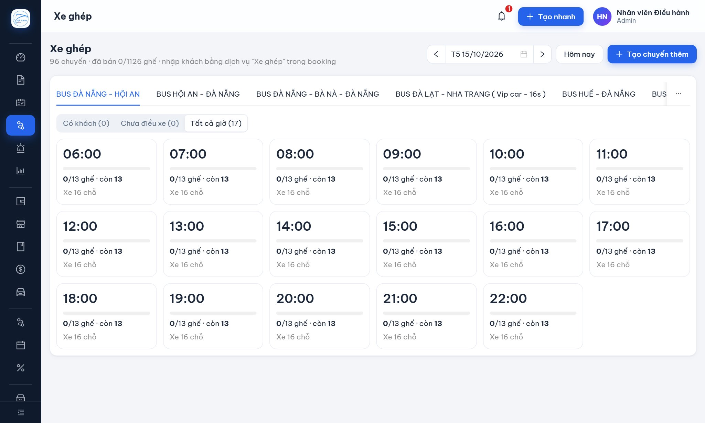
Hình: Trang Xe ghép: các tuyến, giờ chạy, ghế đã bán / còn trống
9. Hiện trường
9.1. Sự cố
Lái xe báo sự cố trên app (hỏng xe, tai nạn, khách vắng, trễ…) kèm ảnh → văn phòng nhận thông báo. Vào Hiện trường xem chi tiết, cập nhật xử lý và đóng sự cố.
9.2. Kiểm tra trước chuyến
Trước mỗi chuyến xe công ty, lái xe làm kiểm tra trước chuyến trên app: tình trạng lái xe (sức khỏe, nồng độ cồn – ảnh máy đo không bắt buộc) và tình trạng xe (đèn, phanh, lốp, giấy tờ…), số km.
Lái xe không đạt (có cồn, không đủ sức khỏe) hoặc xe có hỏng hóc → văn phòng nhận thông báo ngay để đổi lái xe / xe.
Tab Kiểm tra trước chuyến: lọc theo ngày, xe, lái xe, chỉ xem lượt không đạt; Xuất Excel gồm sheet tổng hợp và sheet chi tiết từng hạng mục.
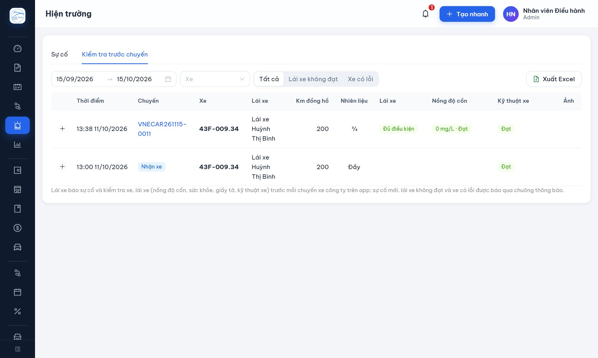
Hình: Hiện trường → Kiểm tra trước chuyến (nồng độ cồn, tình trạng lái xe và xe)
10. Thu tiền khách và công nợ khách hàng
10.1. Ghi nhận thu tiền
Trong booking, phần Thanh toán → Thu tiền: số tiền, hình thức (tiền mặt / chuyển khoản / thẻ / khác), ngày thu, số chứng từ, ghi chú. Hoàn tiền nhập số âm.
Booking hiện nhãn Chưa thu / Thu một phần / Đã thu đủ.
10.2. Công nợ khách hàng
Tài chính → Công nợ khách hàng: gom theo khách / đại lý (khách lẻ theo tên + SĐT). Phải thu = booking đã xác nhận / hoàn thành − đã thu.
Hạn thanh toán = ngày kết thúc chuyến cuối + số ngày công nợ của khách (khai ở danh mục Khách hàng). Cảnh báo quá hạn và vượt hạn mức.
Thu tiền trực tiếp từ dòng công nợ; xuất Excel theo bộ lọc.
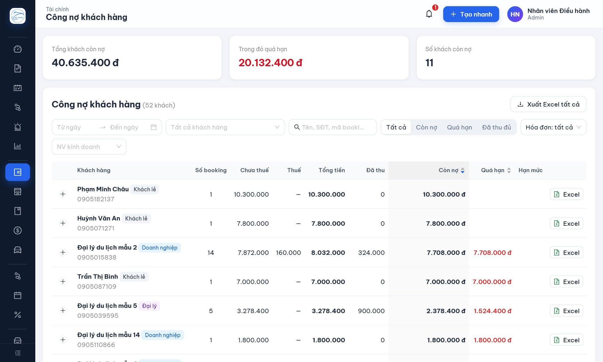
Hình: Công nợ khách hàng
11. Công nợ nhà xe
Tài chính → Công nợ nhà xe: mỗi nhà xe có tiền chuyến (giá thuê + phát sinh đã duyệt, cộng thuế nếu có hóa đơn), đã thanh toán, còn phải trả.
Tab Chuyến để đối soát từng chuyến; tab Đã thanh toán xem các lần trả.
Thanh toán cho nhà xe: số tiền, ngày, hình thức, số chứng từ. Nhà xe xem được công nợ và các lần thanh toán trên cổng nhà xe.
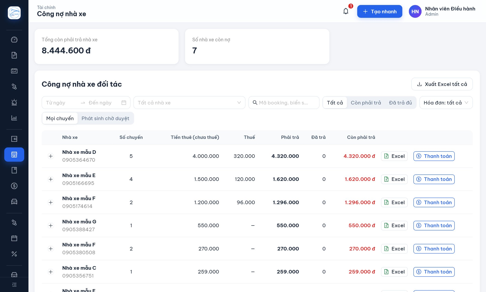
Hình: Công nợ nhà xe
12. Sổ thu chi và tiền nhờ lái xe thu
12.1. Sổ thu chi
Tài chính → Sổ thu chi: mọi khoản thu (tiền khách) và chi (trả nhà xe, chi phí chuyến, phiếu chi khác) theo khoảng ngày; tổng thu, tổng chi, chênh lệch; xuất Excel.
Tạo phiếu thu chi cho khoản thu / chi ngoài booking (đính kèm ảnh chứng từ).
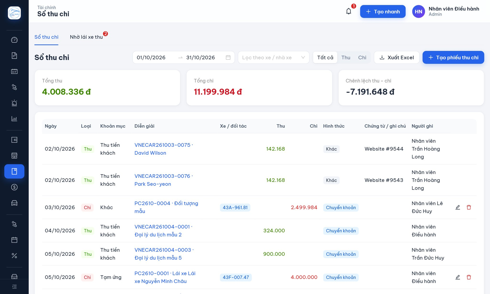
Hình: Sổ thu chi
12.2. Tiền nhờ lái xe thu (tab Nhờ thu)
Khách trả tiền mặt cho lái xe được theo dõi riêng, chưa ghi vào sổ thu cho tới khi tiền về công ty:
Chưa thu→ lái xe bấm "đã thu" trên app →Lái xe giữ→ Điều hành xác nhận đã nhận →Chờ kế toán→ Kế toán xác nhận →Đã nộp
Chỉ khi cả Điều hành và Kế toán xác nhận, phần mềm mới tạo phiếu thu cho booking và bỏ khoản đó khỏi danh sách lái xe đang giữ.
Khoản khách chuyển khoản chỉ cần Kế toán xác nhận. Bấm nhầm thì bỏ xác nhận được.
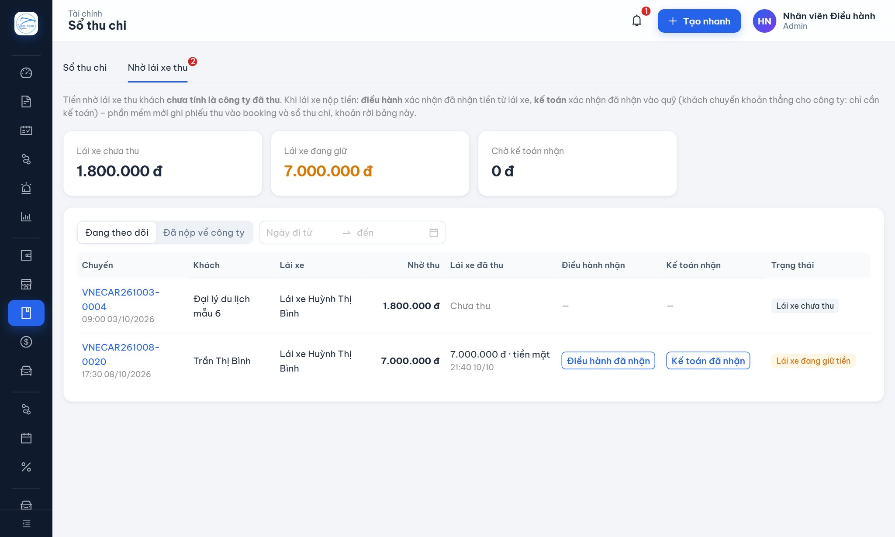
Hình: Tab Nhờ lái xe thu: lái xe giữ tiền → Điều hành nhận → Kế toán nhận
13. Tạm ứng lái xe
Lái xe gửi đề nghị tạm ứng trên app (số tiền, lý do).
Tài chính → Tạm ứng lái xe: Kế toán / Admin Duyệt & chi hoặc Từ chối. Khoản đã ứng được trừ vào bảng lương lái xe.
14. Phí đường ePass
Mỗi tuần, tải hóa đơn điện tử ePass (file PDF hoặc XML, có biển số xe) từ trang ePass.
Tài chính → Phí đường ePass → chọn một hoặc nhiều file → Nhập.
Phần mềm đọc từng lượt qua trạm và gắn vào chuyến gần nhất của xe đó trong cùng ngày thành chi phí chuyến: Cầu đường hoặc Phí sân bay. Lượt trùng không nhập hai lần.
Lượt chưa khớp chuyến: bấm Khớp lại chuyến (sau khi đã điều xe bổ sung) hoặc gắn tay; Bỏ gắn nếu gắn sai.
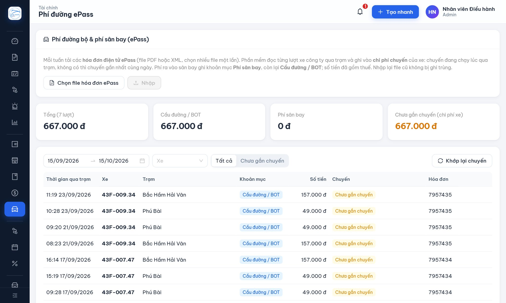
Hình: Phí đường ePass: nhập file hóa đơn, các lượt qua trạm và chuyến được gắn
15. Báo cáo và bảng lương lái xe
Báo cáo: chọn kỳ (tháng này, tháng trước, quý, năm, tùy chọn). Tính theo ngày đón, chỉ chuyến của booking đã xác nhận / hoàn thành; doanh thu chưa gồm VAT.
Các tab: Chi tiết chuyến (doanh thu, chi phí, lợi nhuận từng chuyến), Hiệu suất xe, Hiệu suất lái xe, Nhà xe đối tác, Khách hàng / NV kinh doanh, Dịch vụ & loại xe.
Xuất Excel: mỗi tab một sheet, có dòng tổng cộng.
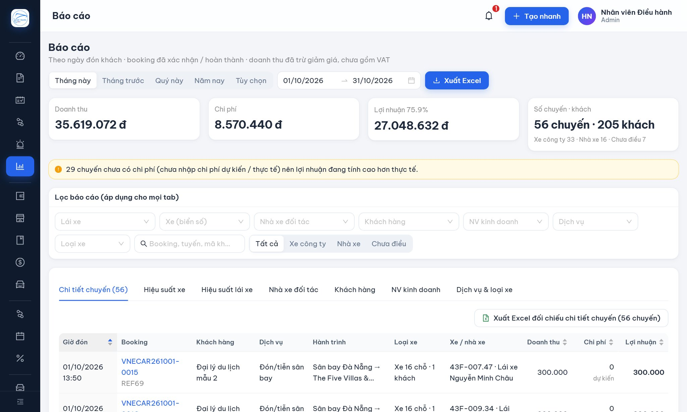
Hình: Trang Báo cáo: chọn kỳ, bộ lọc, các tab và Xuất Excel
Bảng lương lái xe (Admin, Kế toán)
Cài mức lương ở Danh mục → Lái xe: lương cứng, % doanh số, lương đóng bảo hiểm (mặc định 5.000.000 đ), tháng bắt đầu áp dụng. Tăng lương thì thêm mức mới – các tháng trước giữ mức cũ.
Báo cáo → Hiệu suất lái xe → Bảng lương lái xe: lương cứng theo ngày trong kỳ + % doanh thu chuyến đã hoàn thành; trừ BHXH, BHYT, BHTN phần người lao động; cộng hoàn ứng (chi phí lái xe tự chi trên app); trừ tạm ứng → Thực nhận.
Tỷ lệ bảo hiểm (người lao động / công ty) chỉnh ở Thông tin công ty. Excel bảng lương có cột riêng từng loại bảo hiểm.
16. Bảng giá
Menu
Nội dung
Giá theo tuyến
Mỗi tuyến (ví dụ Sân bay Đà Nẵng → Hội An) có giá bán cho từng loại xe, kèm giá mua đối tác tham khảo.
Giá thuê theo ngày
Theo loại xe: giá ngày / nửa ngày (gói giờ, km), vượt km, vượt giờ, lưu đêm tài xế.
Phụ thu & ngày lễ
Phụ thu tự động ban đêm (22h–5h), lễ Tết (theo danh sách ngày lễ), hoặc chọn tay khi báo giá.
Giá trong bảng chỉ là gợi ý khi thêm chuyến; nhân viên sửa được trên từng booking.
17. Danh mục
Danh mục
Lưu ý khi nhập
Xe
Biển số, loại xe, sở hữu (công ty / đối tác), lái xe mặc định, trạng thái; hạn đăng kiểm, bảo hiểm, phù hiệu (để cảnh báo).
Lái xe
Họ tên, SĐT, CCCD, hạng bằng, hạn bằng lái, khám sức khỏe, trạng thái (đang làm / nghỉ phép / nghỉ việc), tài khoản app, mức lương.
Nhà xe đối tác
Thông tin liên hệ, ngân hàng, loại xe cung cấp; tạo tài khoản cổng nhà xe ở Hệ thống → Người dùng (vai trò Nhà xe đối tác).
Khách hàng
Khách / đại lý, loại khách, số ngày công nợ, hạn mức công nợ, thông tin hóa đơn.
Địa điểm
Sân bay, khách sạn, điểm tham quan, bến xe… để chọn nhanh.
Loại xe, Dịch vụ, Tuyến xe ghép, Loại chi phí, Loại khách hàng, Nguồn khách
Danh mục dùng chung cho booking, báo cáo.
Không xóa danh mục đã dùng trong booking; đổi trạng thái ngừng hoạt động / nghỉ việc thay vì xóa để giữ lịch sử.
18. Hệ thống (chỉ Admin)
Người dùng: tạo tài khoản, gán vai trò (một người nhiều vai trò được), khóa tài khoản nghỉ việc, đặt lại mật khẩu. Tài khoản lái xe gắn với hồ sơ lái xe; tài khoản nhà xe gắn với nhà xe.
Thông tin công ty: tên, địa chỉ, MST, logo, ngân hàng, ghi chú báo giá; thông tin hợp đồng vận chuyển (người đại diện, giấy phép kinh doanh vận tải, điều khoản); tỷ lệ bảo hiểm; yêu cầu kiểm tra trước chuyến.
Nhật ký thao tác: ai đã làm gì, lúc nào (tạo / sửa / xóa booking, điều xe, thu chi…).
Sao lưu & dọn dẹp: lịch sao lưu tự động hằng ngày (dữ liệu + file), tải bản sao lưu; kết nối website (nhận đơn tự động, xem các đơn đã nhận).
19. App lái xe
Cài app Android bản mới nhất (văn phòng gửi file APK). Màn hình đăng nhập → địa chỉ máy chủ https://dieuxe.vietnamexplore.vn → tài khoản lái xe.
Lái xe: nhận chuyến, xem lộ trình, khách, chuyến bay, bảng đón, hợp đồng; kiểm tra trước chuyến (bắt buộc với xe công ty); cập nhật trạng thái; nhập chi phí (xăng, cầu đường… kèm ảnh); bấm đã thu tiền với chuyến nhờ thu; báo sự cố; đề nghị tạm ứng; ký xác nhận hoàn thành.
App không theo dõi vị trí lái xe (xe đã có thiết bị định vị theo quy định).
Nhà xe đối tác dùng cổng nhà xe trên điện thoại (xem tài liệu riêng):
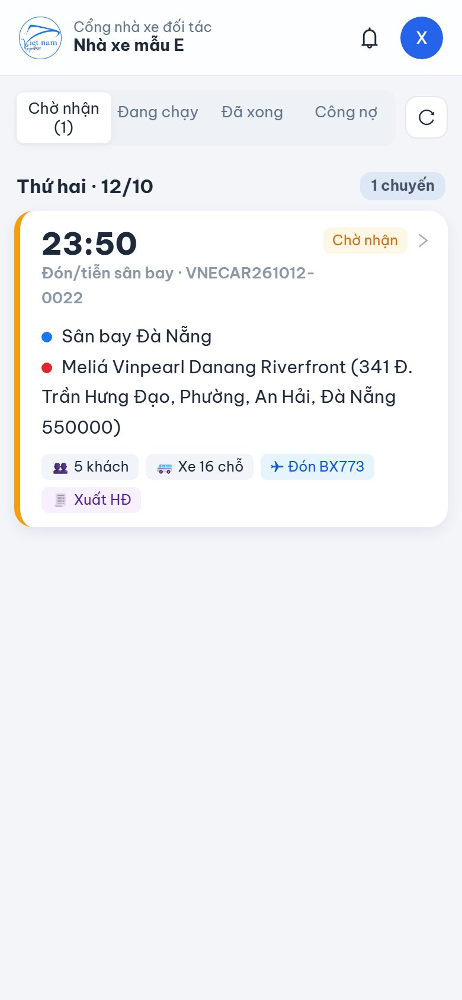
Hình: Danh sách chuyến
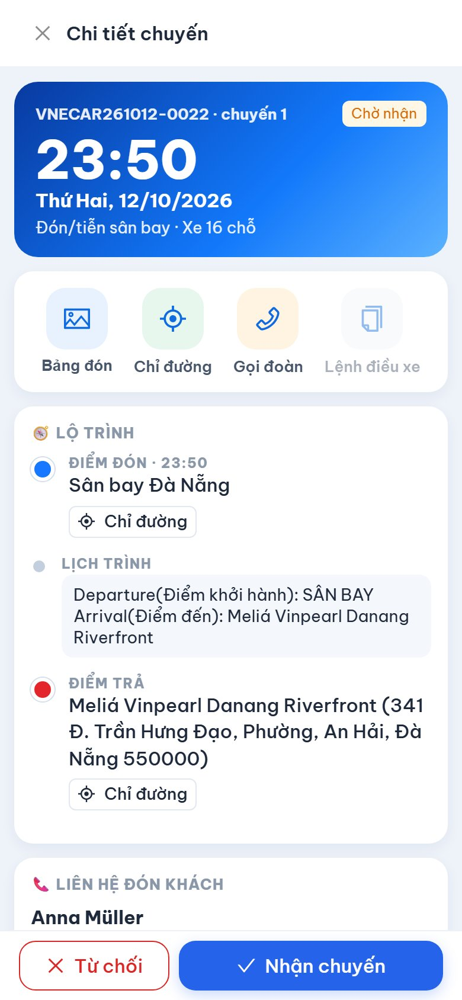
Hình: Chi tiết chuyến
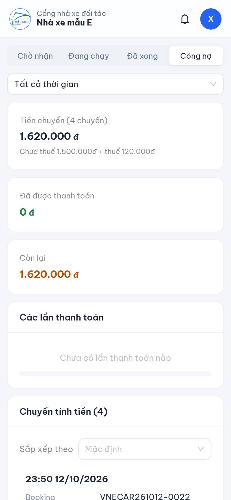
Hình: Công nợ
20. Quy định chung và câu hỏi thường gặp
Quy định
Mọi đơn phải có booking trong phần mềm trước khi chạy; mọi chuyến phải được điều xe trên phần mềm.
Thu tiền nào ghi ngay phiếu thu đó; tiền lái xe thu hộ phải qua đủ 2 bước xác nhận.
Nhập chi phí thực tế của chuyến kịp thời để báo cáo lợi nhuận đúng.
Bảo mật dữ liệu khách hàng; không xuất / gửi danh sách khách ra ngoài khi không cần thiết.
Câu hỏi thường gặp
Câu hỏi
Trả lời
Không thấy menu / nút cần dùng?
Tài khoản chưa có quyền – báo Admin cấp vai trò phù hợp.
Chuyến không hiện ở cột Chờ điều xe?
Booking chưa Đã xác nhận, hoặc là lượt xe ghép (điều ở trang Xe ghép).
Lái xe báo không bắt đầu được chuyến?
Chưa làm / không đạt kiểm tra trước chuyến trong ngày – xem tab Kiểm tra trước chuyến.
Nhà xe từ chối chuyến?
Nhận thông báo kèm lý do; chuyến về Chờ điều xe – điều lại.
Booking website thiếu thông tin?
Liên hệ khách để bổ sung vào booking. Admin xem được đơn gốc ở Hệ thống → Sao lưu & dọn dẹp, mục kết nối website.
Lợi nhuận báo cáo cao bất thường?
Chuyến chưa nhập chi phí – nhập chi phí dự kiến / thực tế.
Quên mật khẩu?
Báo Admin đặt lại.
Hỗ trợ: liên hệ Admin phần mềm của công ty. Tài liệu hướng dẫn riêng cho nhà xe đối tác: "Hướng dẫn sử dụng – Cổng nhà xe đối tác".